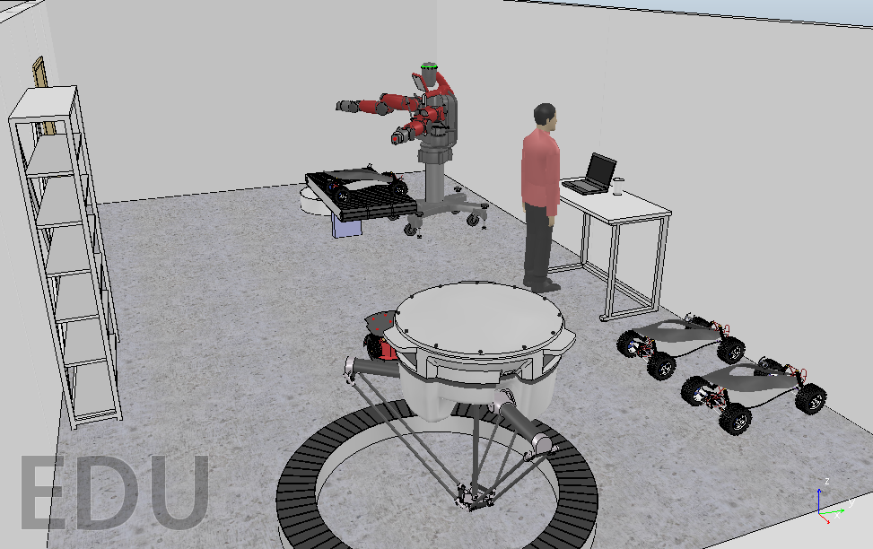

O V-Rep (Virtual Robot Experimentation Platform) é um simulador amplamente utilizado para criar e simular robôs em diversas aplicações. Ele oferece um ambiente computacional simples e flexível para experimentos e testes.
Robôs manipuladores, tanto móveis quanto estáticos, podem ser modelados e simulados no V-Rep. Isso permite que projetistas e pesquisadores refinem seus projetos antes de construir fisicamente os robôs.
Na imagem acima, você pode ver alguns dos robôs disponíveis no V-Rep. Essa ferramenta oferece uma maneira eficiente de explorar e experimentar com robótica virtual.
Drive com o Projeto